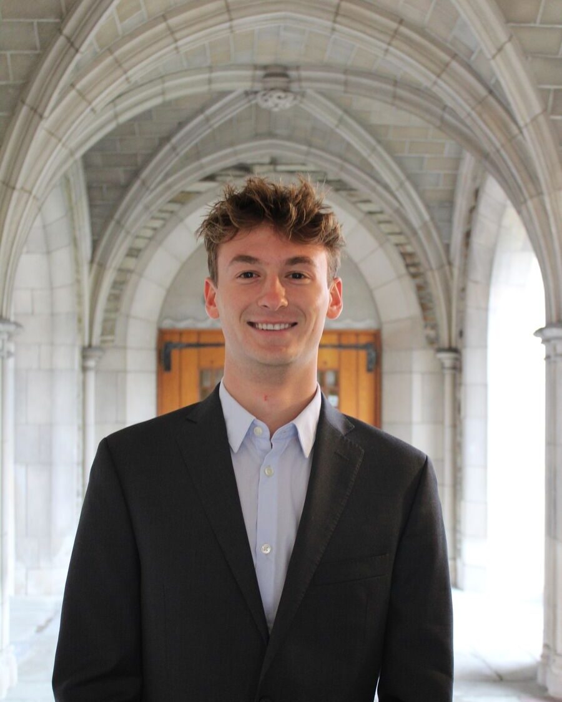
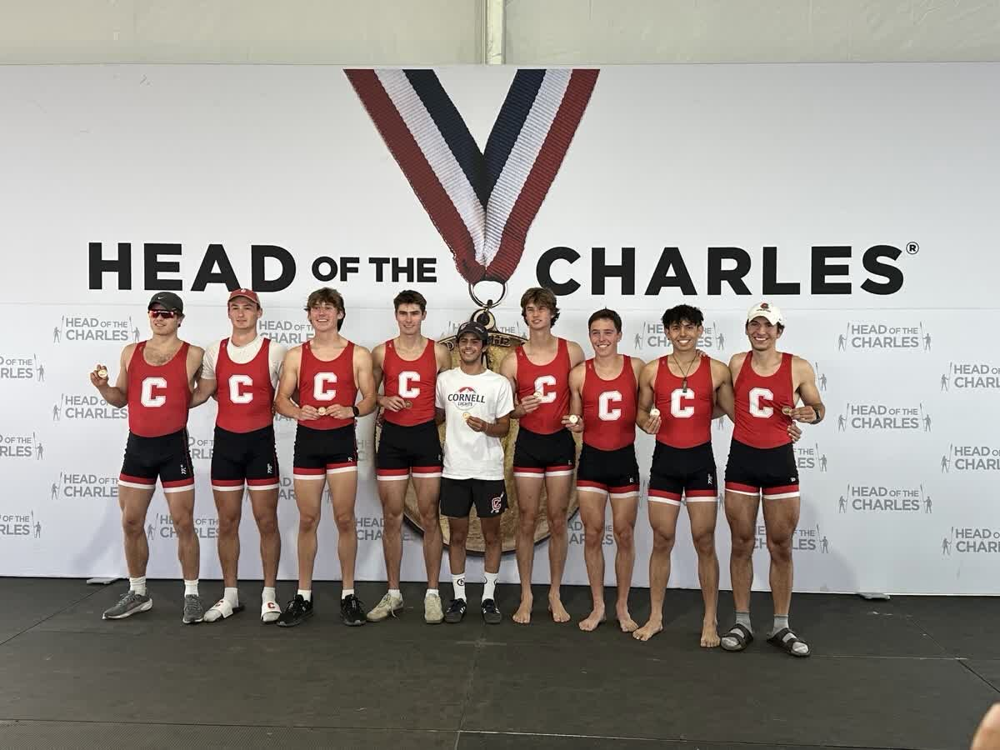
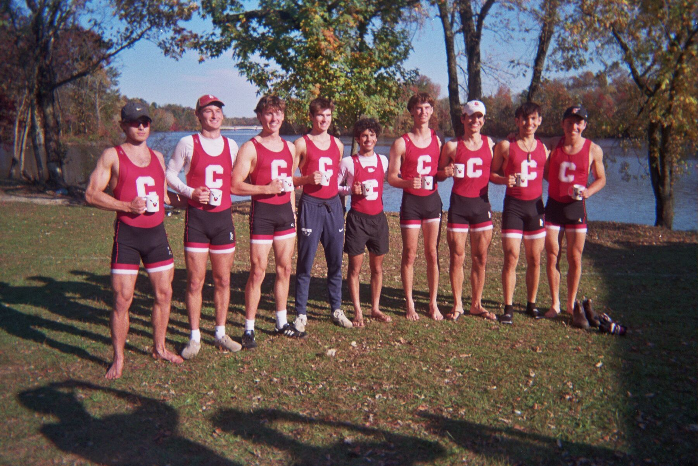
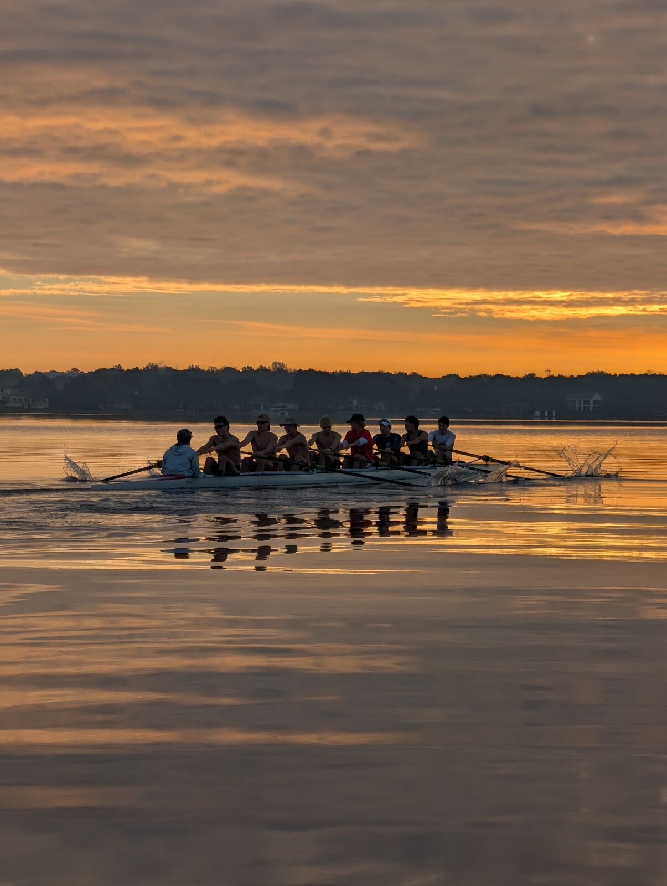
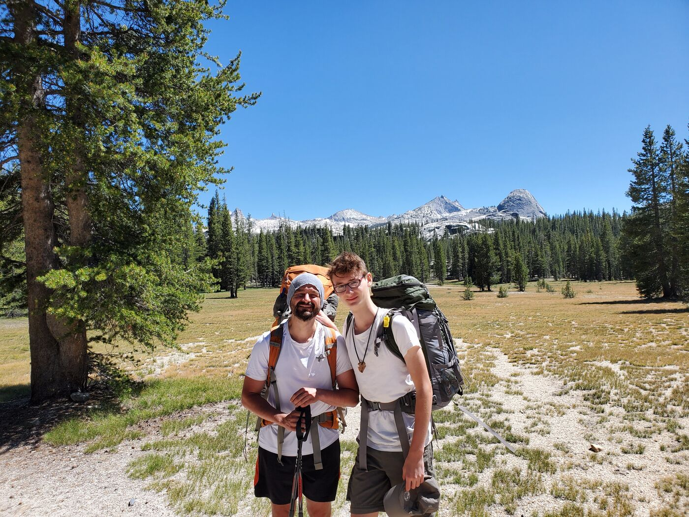
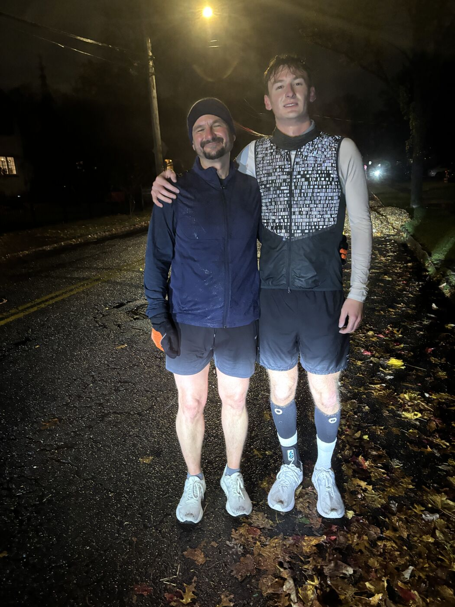
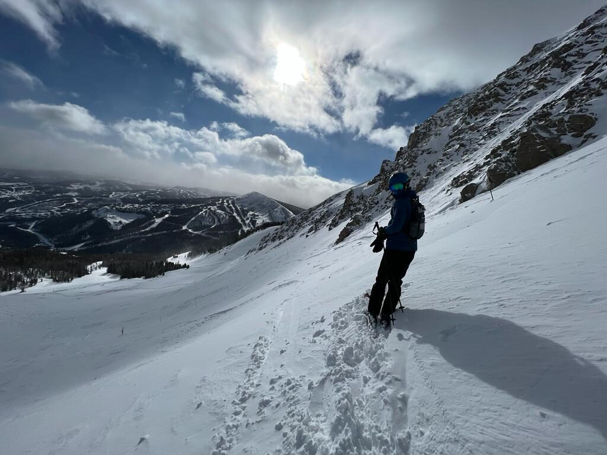
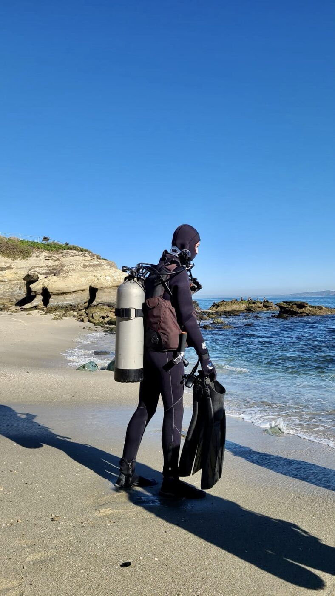

Maximilian Purcea
Mechanical engineering student at Cornell University with experience in aerodynamic analysis, composite and foam tooling, and mechanical design. Former engineering intern at Princeton Carbon Works and IRA Division I lightweight rower.

Projects

Parametric Rim Aerodynamics
Parametric CAD and CFD used to reduce triathlon wheel drag across the crosswind conditions riders see in a race.
Read more →
Cornell Concrete Canoe
Mold sub-team work: in-house hot-wire fabrication of the 2026 canoe mold with a sectioned center for demolding, and hull CFD and reusable mold development for the 2026–27 canoe.
Read more →
GD&T Frame Drawings and Hanger Replicas
Manufacturing drawings for a carbon bicycle frame, and reverse-engineered Shimano and SRAM UDH derailleur hangers that were 3D printed and fitted to a prototype.
Read more →BrokePart
Mobile application that identifies a broken or missing component from a photograph and provides repair instructions, replacement-part options, or a printable CAD part.
Read more →Additional work
Micro-Roughness Surfaces
Literature review of distributed micro-roughness (DMR) coatings, which reduce drag on streamlined bodies by lowering skin friction, as background for future wheel surface development.
AI Research & Evaluation
Development of multi-step, search-dependent research questions with documented sources, and evaluation of model responses across text, image, audio, and video inputs.
Cornell Lightweight Crew
For five and a half years, I've spent a few hours most Mondays through Saturdays placing a blade in the water and moving in sync with seven others. That time away from screens, school, friends, and even family gives me space to focus, reflect, breathe, and push my body and mind. To me, rowing is doing something uncomfortable so often that it becomes normal, teaching me to accept discomfort whenever it is presented.
I've been lucky to experience the full range of what this sport has to offer, from cold early mornings to spectacular sunsets over Cayuga Lake. I found a part of my day worth sacrificing everything else for, because it holds a balance of effort and satisfaction. I believe you cannot truly appreciate the highs of life without feeling the lows.



About Me
I'm passionate about aerodynamics, precision design, and data-driven engineering. My interest started with my mom, who always pushed me to figure out how the everyday things around me worked. That curiosity stuck. I still love understanding how things work and finding better ways to build them, and I get real satisfaction from taking a system or an everyday process and making it better.
I'm also interested in how AI can speed up engineering work. Through contract work with AfterQuery and research and evaluation work with Handshake AI, I've gotten a close look at how these models reason and how they can be applied to technical problems.
Outside of engineering, I look for experiences that challenge me and push me into new territory. That has meant learning the drums, skiing, scuba diving, running ultramarathons, DJing, and backpacking.
At Cornell, I'm on the mold sub-team of Cornell Concrete Canoe, where I model hull and mold geometry and help build the foam mold for our 20 ft competition canoe. This past summer I interned at Princeton Carbon Works, running parametric CFD studies on carbon triathlon wheel rims and preparing GD&T manufacturing drawings for a carbon frame.
Simulation & Analysis
External-flow CFD (NablaFlow AeroCloud, ANSYS Fluent), yaw-weighted drag analysis, and analytical hand calculations for verification.
Design & CAD
Parametric modeling in SolidWorks and Fusion 360, manufacturing drawings with GD&T, and reverse engineering of existing components.
Fabrication
Foam mold fabrication and hot-wire cutting, 3D printing, and prototype assembly and testing.
Data & Code
Python (NumPy, pandas, Matplotlib), MATLAB, and Excel for data analysis and process automation.




Resume
-
Jun – Aug 2026
Engineering Intern
Princeton Carbon Works · Mystic, CTParametric CAD and yaw-weighted CFD analysis of triathlon rim profiles; GD&T manufacturing drawings; derailleur hanger replicas.
-
Sep 2025 – Present
Mold Sub-Team Engineer
Cornell Concrete Canoe Project Team · Ithaca, NYHull and mold geometry in Fusion 360; hull CFD in ANSYS Fluent; development of a reusable foam mold process.
-
Oct 2025 – Present
AI Research & Evaluation Specialist
Handshake AI · RemoteResearch question development with independent sourcing; multimodal evaluation of model responses.
-
Aug 2024 – Present
IRA Division I Varsity Athlete
Cornell Lightweight Crew · Ithaca, NY20+ hours of training per week in a nationally ranked program. Member of the crew that set the all-time course record at the Princeton Chase Regatta.
-
Summers 2024 & 2025
Head Counselor
Pelham Country Club · Pelham, NYManaged daily operations for a camp of 50+ members and supervised junior counselors.
-
May – Aug 2023
Operations & Logistics Intern
BuddhaBooth · Mount Vernon, NYAssembled and bench-tested portable wellness booths for a customer base of 200+ schools.